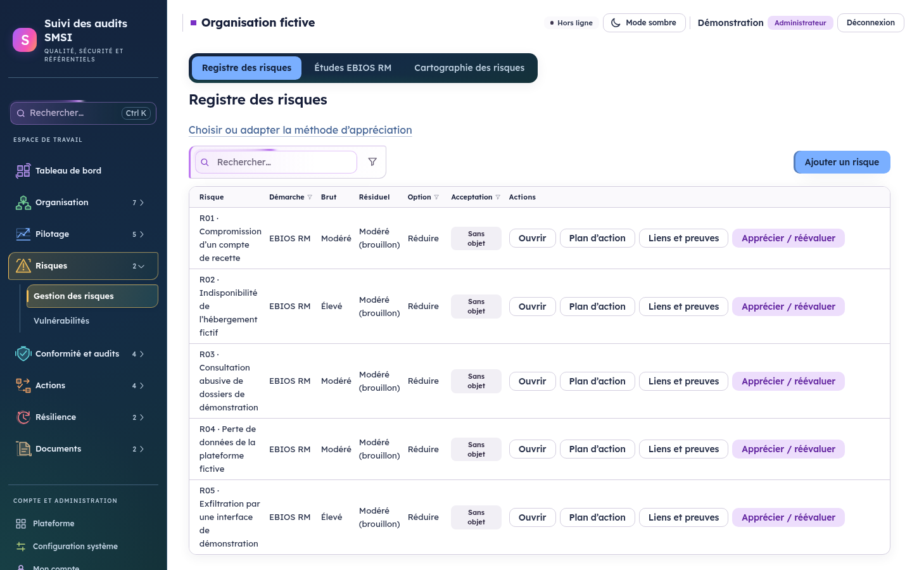
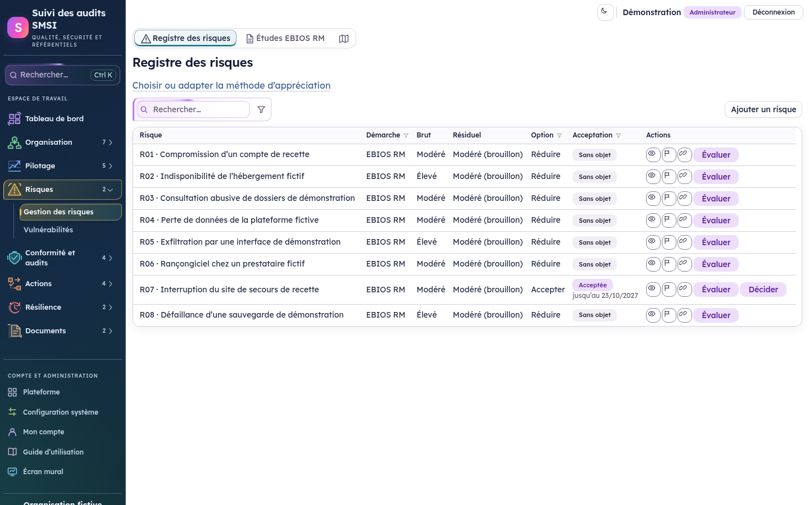
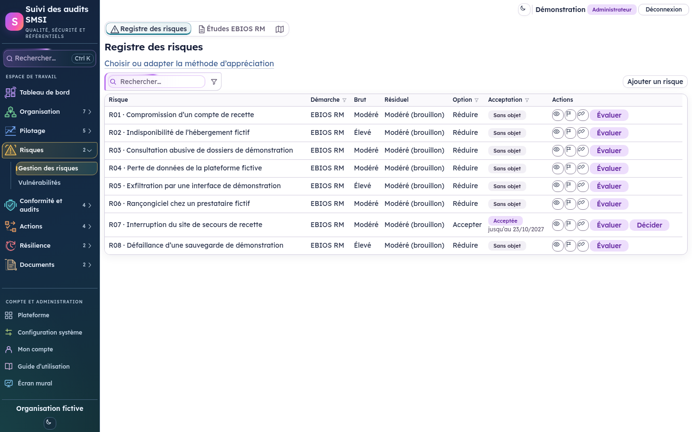
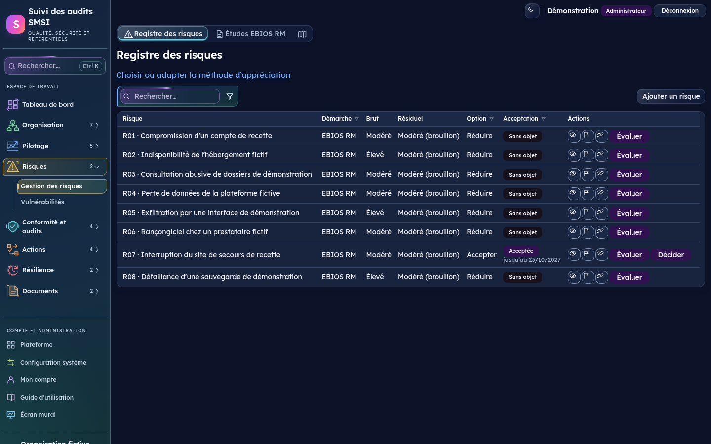
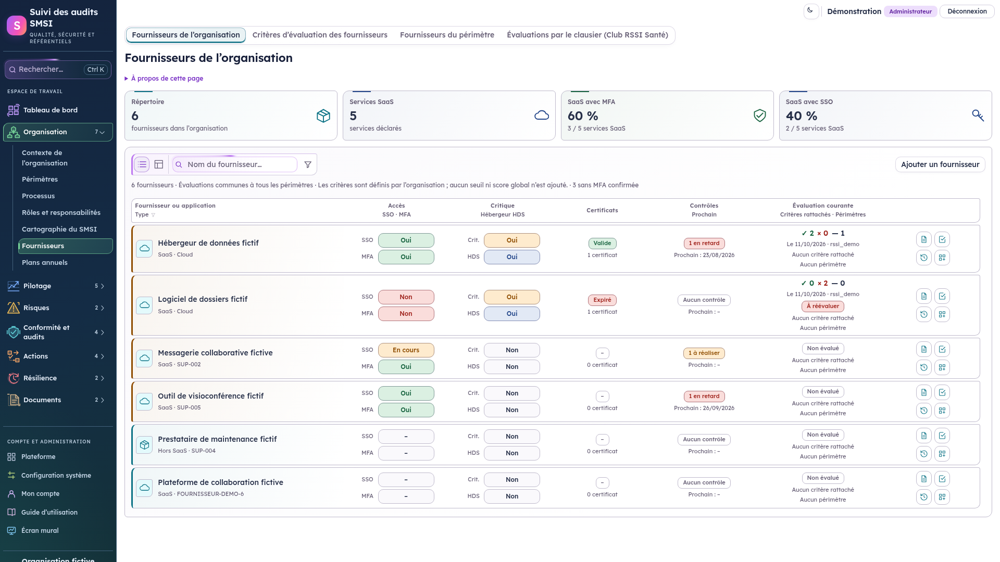
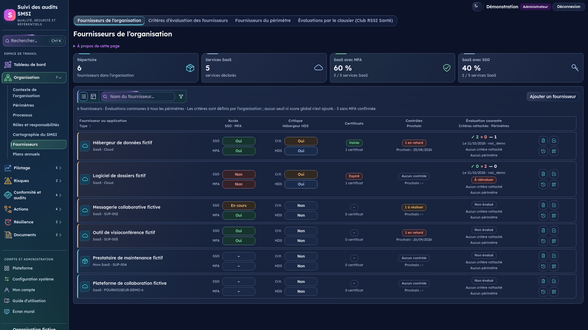
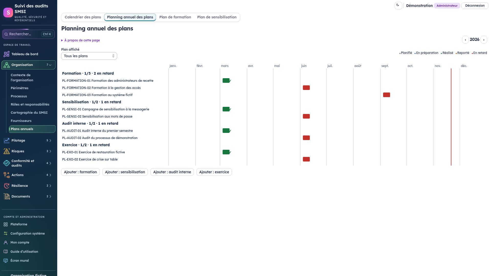
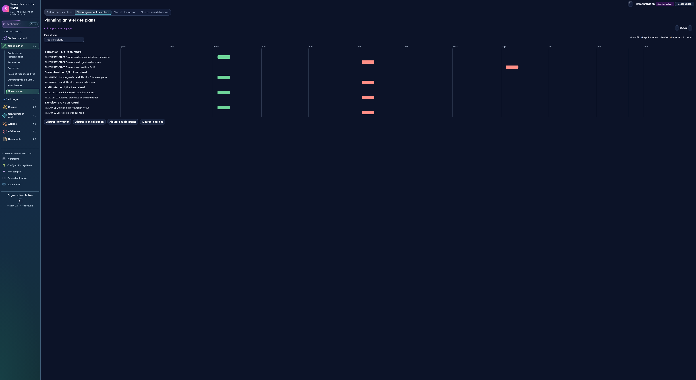
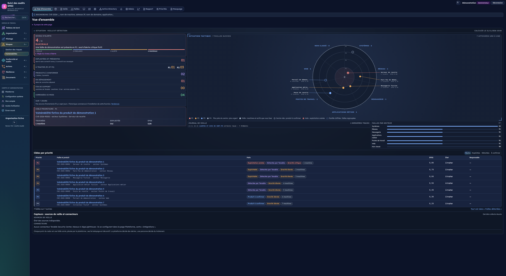

Captures réelles du frontend React, avec API interceptée et données fictives. Les images sont intactes, sans retouche ni agrandissement. Cliquer pour consulter les pixels d’origine. Ce sont des vues de présentation ; aucune recette du serveur ni validation humaine n’est déclarée.
Risques — ancien compact, 1440 × 900
Ouvrir la capture à sa résolution d’origine
Risques — nouveau normal clair, 1440 × 900
Ouvrir la capture à sa résolution d’origine
Risques — nouveau compact clair, 1440 × 900
Ouvrir la capture à sa résolution d’origine
Risques — nouveau normal sombre, 1440 × 900
Ouvrir la capture à sa résolution d’origine
Fournisseurs — nouveau normal clair, 1920 × 1080
Ouvrir la capture à sa résolution d’origine
Fournisseurs — nouveau normal sombre, 1920 × 1080
Ouvrir la capture à sa résolution d’origine
Planning — nouveau normal clair, 1920 × 1080
Ouvrir la capture à sa résolution d’origine
Planning — nouveau normal sombre, 3840 × 2100
Ouvrir la capture à sa résolution d’origine
Vulnérabilités — nouveau normal sombre, 3840 × 2100
Ouvrir la capture à sa résolution d’origine